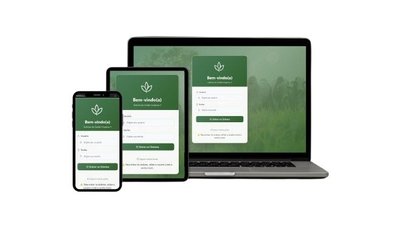

2025 — agora
Desenvolvedora Full Stack
Dinâmika Cursos e Sistemas
Sistemas corporativos com PHP, MySQL e JavaScript; integrações REST, automações, Docker e evolução de interfaces responsivas.
Desenvolvedora Full Stack focada em sistemas web, APIs e interfaces modernas — da regra de negócio à entrega.
Sou bacharel em Ciência da Computação pela UNEMAT e pós-graduanda em Engenharia de Software. Desenvolvo sistemas corporativos e produtos digitais usando React, TypeScript, PHP, Python e bancos relacionais.
Gosto de entender o problema por inteiro: converso com quem usa, organizo regras de negócio e construo soluções claras, responsivas e sustentáveis.
Dinâmika Cursos e Sistemas
Sistemas corporativos com PHP, MySQL e JavaScript; integrações REST, automações, Docker e evolução de interfaces responsivas.
Autônoma
Soluções sob demanda para clientes reais: gestão clínica, gestão empresarial e aplicações com React, TypeScript, Flask e Supabase.
EmpreendaMT / UNEMAT
Desenvolvimento, manutenção e evolução do portal, suporte técnico e atualização de conteúdo da plataforma.
Uma seleção de produtos que unem interface, dados e regras de negócio.

Plataforma com gestão de clientes, pedidos e fornecedores, níveis de acesso, dashboards e exportação de relatórios.
Ver projeto no GitHub ↗Gestão documental, submissão e avaliação de projetos, perfis de acesso, uploads e recuperação de senha.
Projeto profissional · código privadoSistema de gestão clínica com prontuários, avaliações, agenda, pagamentos e confirmações via WhatsApp.
Projeto para cliente · código privadoIntegração financeira para autenticação, cobrança, emissão de boletos e automação de pagamentos.
Ver no GitHub ↗React · TypeScript · JavaScript · HTML · CSS · Tailwind · Bootstrap · Vite
PHP · Python · FastAPI · Flask · Node.js · APIs REST · SQLAlchemy
MySQL · PostgreSQL · Supabase · Firebase · Docker · Git · Postman · Vercel
Estou aberta a oportunidades, projetos e colaborações. Se você procura alguém que entenda o problema e transforme isso em software, me chama.